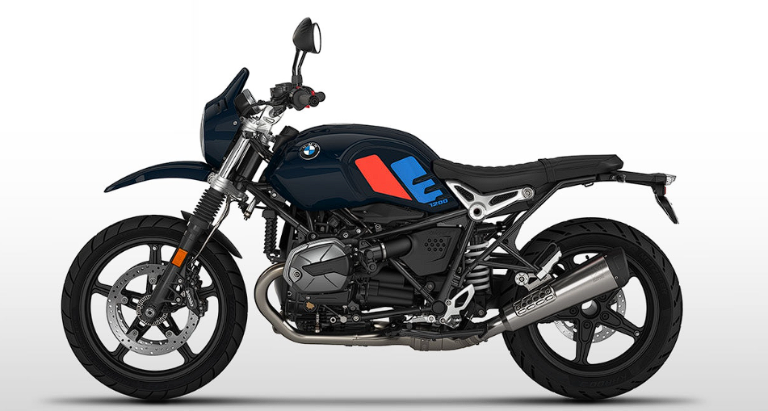

|  | ||||
| Yakıt Tipi | Güç | Cc | ||
| Benzin | 110 bg | 1.1170 cc | ||
BMW R NINE T URBAN G/S ÖZGÜN, ÇARPICI VE DENGELİ
“Bu özellikleriyle sizi geçmişe götürecek ve yeni hikayeler yazarken hep yanı başınızda olacak. Motosikletinize atlayıp sürmeye başladığınızda, sürüşün hedefe ulaşmaktan daha keyifli olduğunu fark edeceksiniz. ” Ulli Sengenberger Renk, grafik ve yüzey tasarımı, R nineT
Noktayı koymak istediğinizde Şehir içi trafiğinde güçlü bir şekilde ilerlemek veya taşlı çakıllı yollarda doğaçlama bir gezintiye çıkmak mı istiyorsunuz? Hava/yağ soğutmalı boxer hayallerinizi gerçekleştirir. Üstelik, yolculuğu da eğlenceli hale getirir. Sürüş tarzı dengeli ve gerektiğinde heyecan verici dinamiklerle doludur. İyileştirilmiş tork eğrisi 4.000 ve 6.000 dev/dk arasında dinamik bir çekiş gücü sunar. Aklınıza esecek fikirler tam da bu noktada doğar. Azami tork yine 6.000 dev/dk’da 116 Nm’dir. Boxer motor elbette Euro 5 standardının gerekliliklerini karşılar